flowchart TD
ROOT["<b>Root</b><br/>Try Select Children In Order<br/><i>Parameter: HidingLocation</i>"]
HIDE["<b>Hide</b><br/>Enter: AIController.IsPlayerVisible"]
FIND["<b>FindHidingSpot</b><br/>Run Env Query → HidingLocation"]
MOVE["<b>MoveToHidingSpot</b><br/>Move To (HidingLocation)"]
IDLE["<b>Idle</b> (fallback)<br/>Delay 2 s"]
ROOT --> HIDE
ROOT --> IDLE
HIDE --> FIND
HIDE --> MOVE
FIND -. "On Succeeded" .-> MOVE
FIND -. "On Failed" .-> IDLE
MOVE -. "On Completed" .-> ROOT
IDLE -. "On Event: AI.Runner.PlayerSeen" .-> HIDE
State Trees: AI Perception and EQS
Practical Assignment 03 — an NPC that sees the player and hides, with State Trees in Unreal Engine 5
Introduction
In the previous assignment the agent “saw” the player with a line trace written by hand. Unreal Engine has two systems that do this kind of work much better:
- AI Perception gives the agent senses (sight, hearing, damage, …) and tells it when it starts or stops perceiving something.
- EQS (Environment Query System) asks questions about the world, such as “which nearby spot can the player not see?”, by generating candidate points and scoring them with tests.
In this assignment you will build an NPC that:
- idles while it doesn’t see the player;
- hides, when it sees the player, by running an EQS query that finds a nearby spot out of the player’s sight, and moving there;
- hides again if the player can still see it when it arrives.
The decision logic is a State Tree. Perception feeds it through State Tree Events, and the EQS result reaches it through a tree parameter.
Prerequisites
This assignment assumes you completed Assignment 02 (State Trees: Patrol and Chase). State Tree basics (selection, transitions, tasks, bindings) are only recapped here.
What you will build
And this is how information flows between the systems:
sequenceDiagram
participant P as AIPerception
participant C as AIC_Runner
participant ST as ST_Runner (StateTreeAI)
participant EQS as EQS_FindHidingLocation
P->>C: On Target Perception Updated (Actor, Stimulus)
C->>C: PlayerCharacter = Actor<br/>IsPlayerVisible = Successfully Sensed
C->>ST: Send State Tree Event (AI.Runner.PlayerSeen)
ST->>ST: Idle → Hide (enter condition reads IsPlayerVisible)
ST->>EQS: Run Env Query (Querier = pawn)
EQS->>C: EQS_Enemy_Context asks for PlayerCharacter
EQS-->>ST: best location → Parameter HidingLocation
ST->>ST: FindHidingSpot → MoveToHidingSpot (Move To HidingLocation)
Concepts
State Trees: quick recap
| Concept | Reminder |
|---|---|
| Selection | Depth-first, children tried top to bottom; a state is entered only if its enter conditions pass |
| Transitions | Evaluated from the active leaf up to the root; the first one that passes wins |
| Tasks | Run while their state is active; when one finishes, the state completes (Succeeded/Failed) |
| Context | With the StateTree AI Component schema: Actor (the pawn) and AIController |
| Bindings | Tasks and conditions read parameters, context and outputs of other tasks through bindings, not a Blackboard |
This assignment adds three things you haven’t used yet: State Tree Events, bindings to properties of a context object, and property references. They are explained in Talking to a State Tree from outside.
AI Perception
The AI Perception system gives pawns sensory data: where noises come from, whether the AI was damaged, or whether it sees something. It is made of:
- AIPerception component – added to the AI Controller. It is the listener: it holds the list of senses and fires events when perception changes.
- Senses – configured in the component’s Senses Config array: Sight, Hearing, Damage, Touch, Team, Prediction.
- Stimuli sources – the actors that can be sensed. Pawns are registered for Sight automatically, so the player can be seen without extra setup. Other actors need an AIPerceptionStimuliSource component.
The main Sight settings:
| Property | Meaning |
|---|---|
| Sight Radius | Distance at which a target starts being seen |
| Lose Sight Radius | Distance at which a seen target is lost (bigger than Sight Radius to avoid flickering) |
| Peripheral Vision Half Angle | Half of the vision cone angle (90° = a 180° cone) |
| Detection by Affiliation | Which teams can be seen: Enemies, Neutrals, Friendlies |
| Max Age | How long (seconds) a stimulus is remembered after it stops being sensed. 0 = forever |
Detection by Affiliation in Blueprint projects
Teams are assigned through the C++ interface IGenericTeamAgentInterface. Without it, every actor is Neutral, so an AI that only detects Enemies sees nothing. In Blueprint-only projects, enable all three flags and decide in Blueprint which perceived actors matter (here: only the player character).
The component offers these events:
| Event | Fires when | Gives you |
|---|---|---|
| On Perception Updated | The set of perceived actors changes | An array of updated actors |
| On Target Perception Updated | A specific actor’s perception changes (seen / lost) | The Actor and its AIStimulus |
| On Target Perception Info Updated | Same as above | An ActorPerceptionUpdateInfo struct (actor + stimulus) |
| On Target Perception Forgotten | A stimulus expires (after Max Age) | The Actor |
Useful fields of an AIStimulus (use Break AIStimulus):
| Field | Meaning |
|---|---|
| Successfully Sensed | true when the target was just sensed, false when it was just lost |
| Stimulus Location | Where the stimulus happened (for sight: where the target was seen) |
| Age / Expiration Age | How old the stimulus is, and when it will be forgotten |
| Tag | Optional tag set by whoever produced the stimulus (e.g. a noise) |
Environment Query System
EQS collects data about the environment. A query generates candidate items (usually points in the world), runs tests on them, and returns the best item(s).
| Part | Description | In this assignment |
|---|---|---|
| Generator | Creates the candidate items | Pathing Grid around the querier (only reachable points) |
| Querier | The actor that runs the query | The AI pawn |
| Context | Tells the query about other things: a single actor/location or a set of them. EnvQueryContext_Querier is the default. |
EQS_Enemy_Context → the player character |
| Test | Checks each item against a context | Trace (visible from the enemy?), Distance (to querier and to enemy) |
Each test has a Test Purpose:
| Test Purpose | Effect |
|---|---|
| Filter Only | Items that fail are discarded |
| Score Only | Every item gets a score; nothing is discarded |
| Filter and Score | Both |
Scores are normalized per test (0–1), shaped by the Scoring Equation (Linear, Inverse Linear, Square, …) and weighted by the Scoring Factor. The final score of an item is the sum over all tests.
The Run Mode decides what the query returns:
| Run Mode | Returns |
|---|---|
| Single Best Item | The item with the highest score |
| Single Random Item from Best 5% / 25% | A random item among the best ones (less predictable AI) |
| All Matching | Every item that passed the filters |
EQS Testing Pawn
An EQSTestingPawn placed in the level runs a query in the editor, without playing, and draws the results as colored spheres with their scores. You will use it to design the query before connecting it to the State Tree.
Talking to a State Tree from outside
Perception lives in the AI Controller, but decisions live in the State Tree. Three mechanisms connect them.
1. State Tree Events. An event is a Gameplay Tag (plus an optional payload struct and an origin name) sent to a running tree with Send State Tree Event on the StateTreeAI component. A transition with trigger On Event and the same tag fires when the event arrives. This is the event-driven alternative to the On Tick transitions of Assignment 02: the tree reacts only when something happens.
2. Binding to properties of a context object. The schema’s AI Controller Class is set to your controller class, so the controller’s Instance Editable variables appear in the binding menu under AIController. A condition can read AIController › IsPlayerVisible directly, without a custom task. This is the closest thing to reading a Blackboard key.
3. Property references. Some tasks don’t output a value, they write it into a property of the tree. The built-in Run Env Query task works this way: its Result is a property reference that you bind to a tree parameter, and the task writes the query result there when it finishes. Because the value lives in a parameter, any state can read it later, not only the state that ran the query.
Outputs vs. parameters
A task output can only be read while the task’s state is active (or by later tasks in the same state). A parameter written through a property reference persists for the whole tree. That is why HidingLocation is a parameter: it is found in one state (FindHidingSpot) and used in another (MoveToHidingSpot).
From the Behavior Tree version
If you did this assignment before with a Behavior Tree, this is how the pieces map:
| Behavior Tree version | State Tree version |
|---|---|
BB_Runner key PlayerCharacter (Object) |
AIC_Runner variable PlayerCharacter |
BB_Runner key IsPlayerVisible (Bool) |
AIC_Runner variable IsPlayerVisible + events AI.Runner.PlayerSeen / PlayerLost |
BB_Runner key HidingLocation (Vector) |
Tree parameter HidingLocation |
| Set Value as Object / Bool in the controller | SET controller variables + Send State Tree Event |
| Selector + Blackboard decorator IsPlayerVisible is Set | Root (in order) + Hide state with a Bool Compare enter condition |
| Run EQS Query task → Blackboard key | Run Env Query task → property reference to a parameter |
| Move To (Blackboard key) | Move To (Destination bound to the parameter) |
| Wait (fallback) | Idle state with a Delay task |
EQS_Enemy_Context reads the Blackboard |
EQS_Enemy_Context reads the AIC_Runner variable |
| Run Behavior Tree on possess | StateTreeAI component + Start Logic on possess |
Setting up the basis
Project and plugins
Create a new project based on the Third Person template (Blueprint) and name it AdvancedAI.
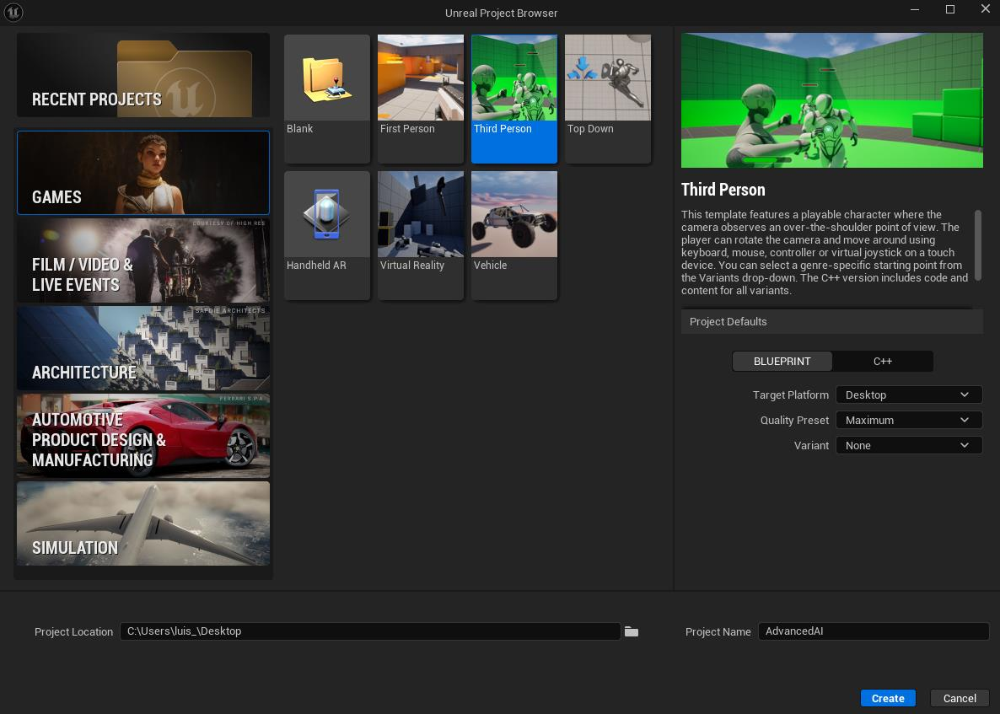
Go to Edit → Plugins and make sure these plugins are enabled (restart the editor if asked):
- StateTree
- Gameplay State Tree (provides the StateTree AI Component, Move To and Run Env Query tasks)
Tip
EQS and AI Perception are part of the engine’s AI module and need no plugin. Older engine versions required enabling EQS in Editor Preferences → Experimental; UE5 doesn’t.
The AI Character
In the Content Drawer, inside ThirdPerson/Blueprints, create a folder named AI.
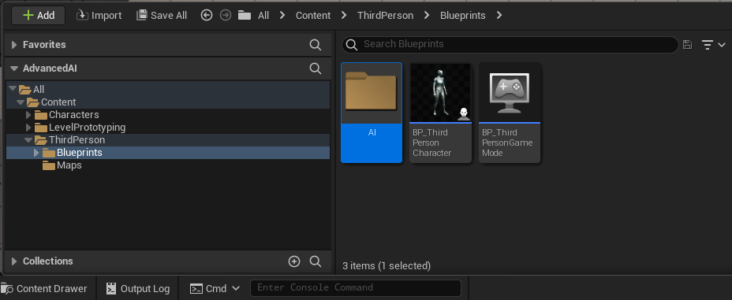
Copy BP_ThirdPersonCharacter into the AI folder (drag it onto the folder and choose Copy Here).
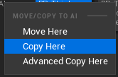
Go to the AI folder and rename the copy to BP_AICharacter.
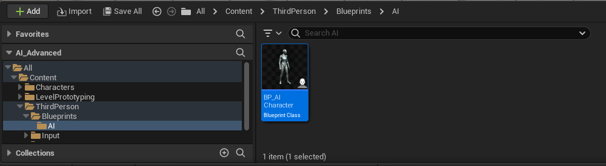
Open BP_AICharacter:
- In the Event Graph, select everything and press Delete. The AI does not read player input.
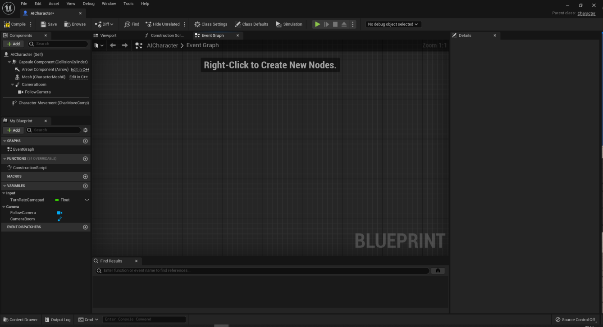
- In the Components panel, delete CameraBoom and FollowCamera.
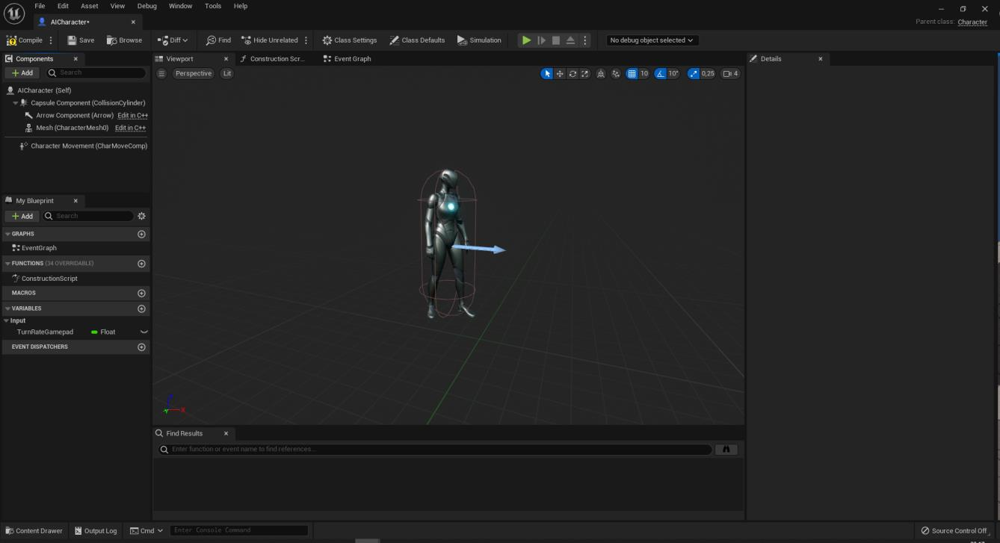
- Compile and Save.
The AI Controller
In Class Defaults, the character’s AI Controller Class is the default AIController:
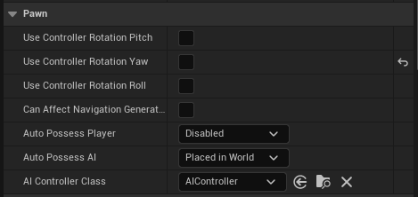
You need a new AI Controller. Inside the AI folder, right-click Blueprint Class, expand ALL CLASSES, search for AIController and select it.
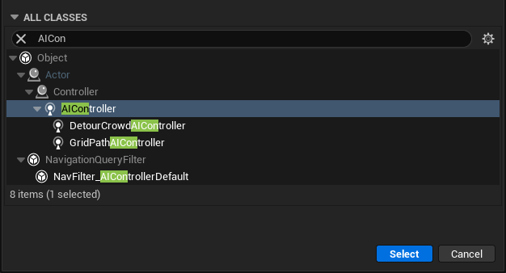
Name the new blueprint AIC_Runner.
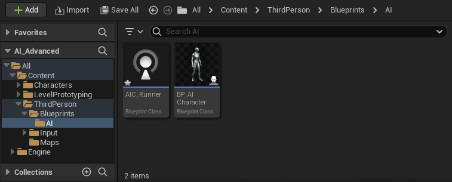
Open BP_AICharacter again, go to Class Defaults and set AI Controller Class to AIC_Runner. Keep Auto Possess AI set to Placed in World (or Placed in World or Spawned).
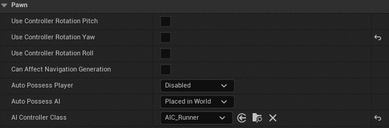
Compile, Save, and drag BP_AICharacter into the level.
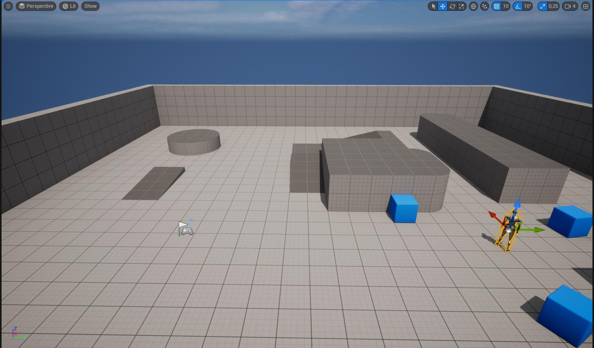
Adding the AIPerception component
Open AIC_Runner and add the component AIPerception (see AI Perception).
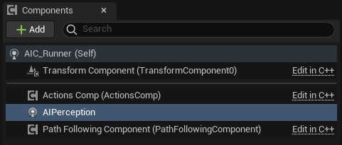
Select the component and, in Details → AI Perception → Senses Config, add an element and set it to AI Sight config. Expand it and set:
| Property | Value |
|---|---|
| Sight Radius | 1000 |
| Lose Sight Radius | 1500 |
| Peripheral Vision Half Angle Degrees | 90 |
| Detection by Affiliation | ✔ Enemies, ✔ Neutrals, ✔ Friendlies |
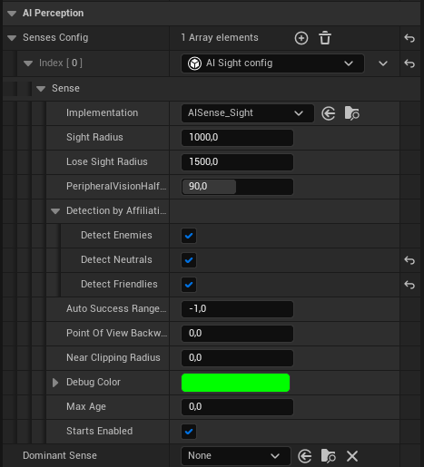
Compile and Save.
The agent can now see you. To check it, press Play, look at the agent and press ’ (apostrophe, next to the 0 key) to open the Gameplay Debugger. Use the numeric keypad to toggle categories: NumPad 0 NavMesh, NumPad 1 AI, NumPad 3 EQS, NumPad 4 Perception.
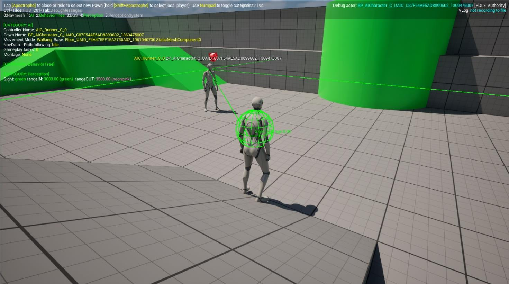
Sending perception to the State Tree
Controller variables
In AIC_Runner, create these variables and mark both as Instance Editable (eye icon), so the State Tree can bind to them:
| Variable | Type |
|---|---|
PlayerCharacter |
Actor (object reference) |
IsPlayerVisible |
Boolean |
The StateTreeAI component
Still in AIC_Runner, Add Component → StateTreeAI. In its Details, uncheck Start Logic Automatically. You will assign the State Tree asset after creating it.
On Target Perception Updated
Select the AIPerception component, right-click the Event Graph and choose Add Event for AIPerception → Event Dispatchers → Add On Target Perception Updated.
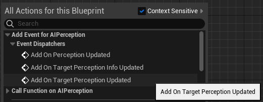
Build the following logic. It only reacts to the player character, stores what happened in the controller variables, and then notifies the State Tree:
Event On Possess
└─► StateTreeAI.Start Logic
On Target Perception Updated (AIPerception) (Actor, Stimulus)
└─► Branch (Actor == Get Player Character (Player Index 0)) False ──► end
└─► SET PlayerCharacter = Actor
└─► Break AIStimulus (Stimulus)
└─► SET IsPlayerVisible = Successfully Sensed
└─► StateTreeAI.Send State Tree Event
Event = Make StateTreeEvent
Tag = Select (IsPlayerVisible ? AI.Runner.PlayerSeen : AI.Runner.PlayerLost)
Origin = "AIC_Runner"
Order matters
Set the variables before sending the event. When the event reaches the tree, the Hide state’s enter condition reads IsPlayerVisible; if it still holds the old value, the transition is rejected.
Warning
The Target of Send State Tree Event must be the StateTreeAI component, not the controller or the pawn.
Compile and Save.
Creating the State Tree
The asset and its schema
In the AI folder, right-click Artificial Intelligence → State Tree, choose the StateTree AI Component schema, name it ST_Runner and open it.
Select ROOT and, in the Asset Details panel, under Schema:
| Property | Value |
|---|---|
| AI Controller Class | AIC_Runner |
| Context Actor Class | BP_AICharacter |
Important
Setting AI Controller Class to AIC_Runner is what makes PlayerCharacter and IsPlayerVisible available in the binding menus.
Tree parameter
In the root’s Details → Parameters, add:
| Name | Type | Default |
|---|---|---|
HidingLocation |
Vector | (0, 0, 0) |
It replaces the HidingLocation Blackboard key.
Assign the tree
Open AIC_Runner, select the StateTreeAI component and set State Tree to ST_Runner. Compile and Save.
A first Idle state
In ST_Runner, add a child of Root named Idle:
| Task | Settings |
|---|---|
| Delay | Duration = 2.0 |
| Debug Text | Text = Idle, Reference Actor → bind to Actor (context) |
| # | Trigger | Go to |
|---|---|---|
| 1 | On State Completed | Root |
Compile and Save.
Checkpoint 1
Play. The agent shows Idle above its head. Open the State Tree Debugger (Window → Debugger in the State Tree editor) and walk in front of the agent: the events AI.Runner.PlayerSeen and AI.Runner.PlayerLost should appear in the timeline. If they don’t, check the Gameplay Tags and the target of Send State Tree Event.
Environment Query System (EQS)
Creating the query
Create a new Environment Query (right-click in the Content Drawer → Artificial Intelligence → Environment Query) and name it EQS_FindHidingLocation.
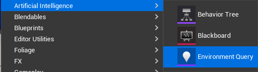
The EQS Testing Pawn
To see what the query does without playing, create a dummy pawn that runs it in the editor (Environment Query System). Create a new Blueprint Class, search ALL CLASSES for EQS, select EQSTestingPawn and name it EQS_TestingPawn.
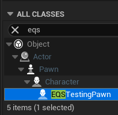
Drag EQS_TestingPawn to the middle of the map:
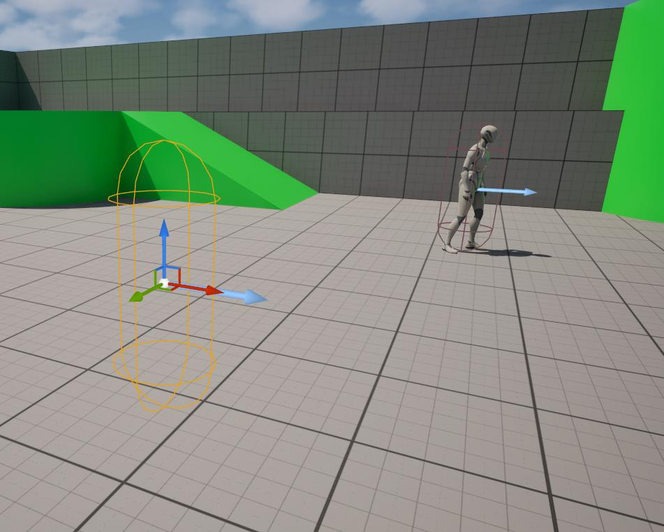
With the testing pawn selected, in Details → EQS, set Query Template to EQS_FindHidingLocation. The pawn now runs the query in the editor.
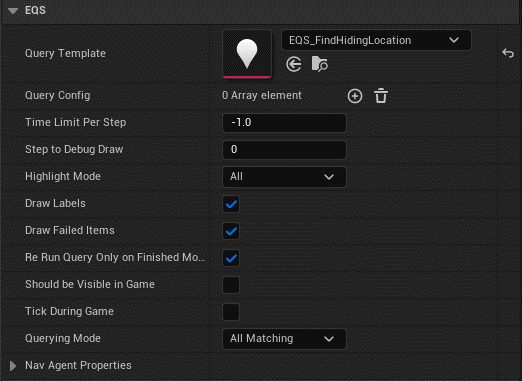
Generator: Pathing Grid
Open EQS_FindHidingLocation. It is empty: right-click the graph and add a Pathing Grid generator (it only generates points that can be reached on the navigation mesh).
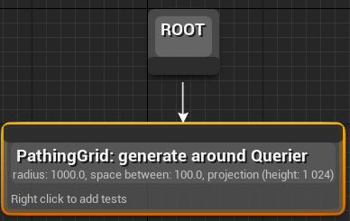
Save it and select EQS_TestingPawn: a grid of spheres appears around it (“generate around Querier”).
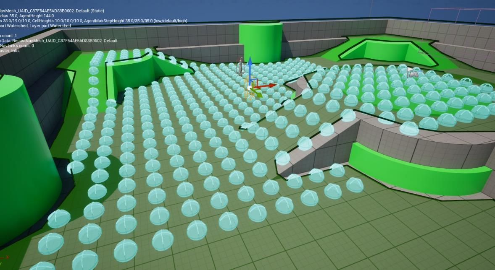
Tip
If the spheres float in the air instead of lying on the navigation mesh, move the testing pawn slightly. The query only re-runs when the pawn’s construction script runs.
In the Pathing Grid, set GridHalfSize = 1500 and Space Between = 150 for a bigger grid with more space between points:
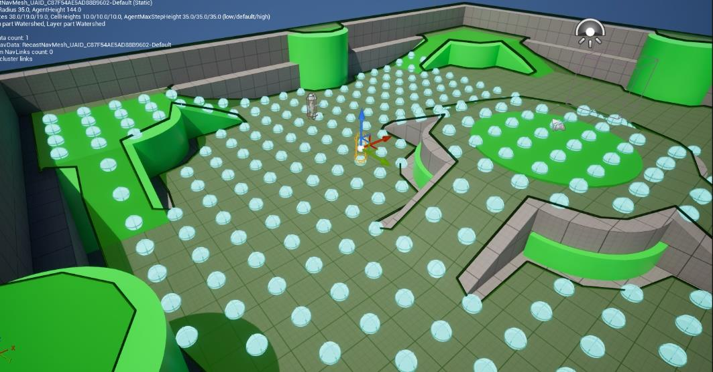
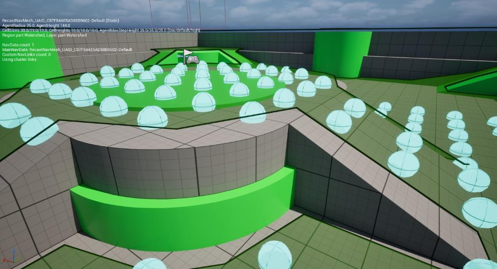
The Enemy Context
A Context is a class with functions you override to give information to tests. We need one that returns the player character.
Create a new Blueprint Class, search ALL CLASSES for Context, select EnvQueryContext_BlueprintBase and name it EQS_Enemy_Context.
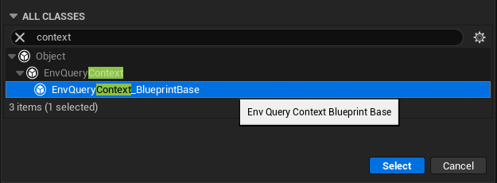
Open it and override Provide Single Actor:
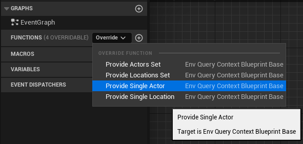
The player character is stored in AIC_Runner, so the context asks the querier’s controller for it:
Provide Single Actor (Querier Object, Querier Actor)
└─► Get AIController (Controlled Actor = Querier Actor)
└─► Cast To AIC_Runner Cast Failed ──► Return Node (Resulting Actor = None)
└─► Is Valid (As AIC Runner.PlayerCharacter) Not Valid ──► Return Node (Resulting Actor = None)
└─► Return Node (Resulting Actor = As AIC Runner.PlayerCharacter)Compile and Save.
Back in the EQS, select the Trace test and set Context to EQS_Enemy_Context:
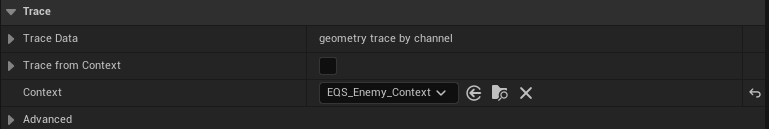
By default the trace goes between the actors’ roots (at their feet), so small obstacles block it. Under Advanced, set Item Height Offset = 180 (eye height at the hiding spot) and Context Height Offset = 90 (the player’s chest, for a 1.80 m tall character):
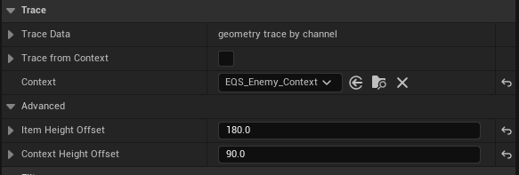
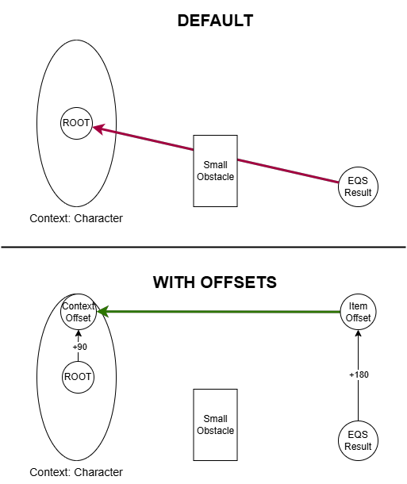
Testing the context in the editor
Look at the level now: every point is red.
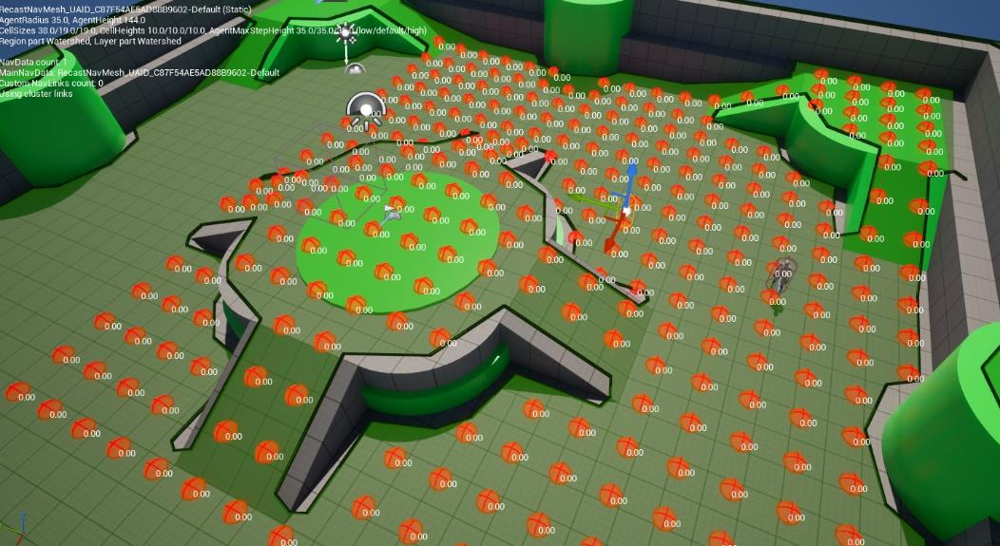
That is because, outside the game, there is no player character, so the context returns nothing. For editor testing we will use the Player Start as the enemy when the querier is the testing pawn. Update Provide Single Actor:
Provide Single Actor (Querier Object, Querier Actor)
└─► Cast To EQSTestingPawn (Querier Object)
Success ──► Get Actor Of Class (PlayerStart) ──► Return Node (Resulting Actor)
Cast Failed ──► (the in-game logic from before: AIC_Runner.PlayerCharacter)If the querier is the EQS Testing Pawn, the Player Start is the enemy; otherwise the real Player Character is. The visibility check now works both in the editor and in game:
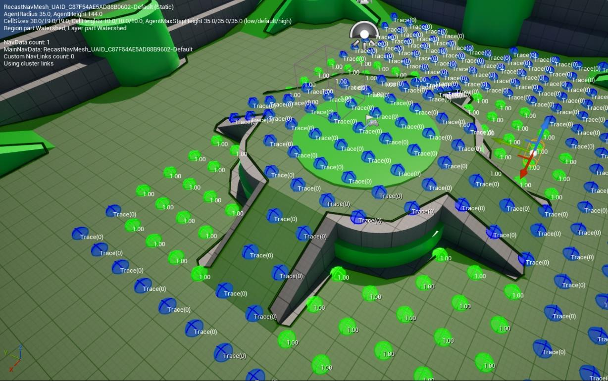
So far you should have:
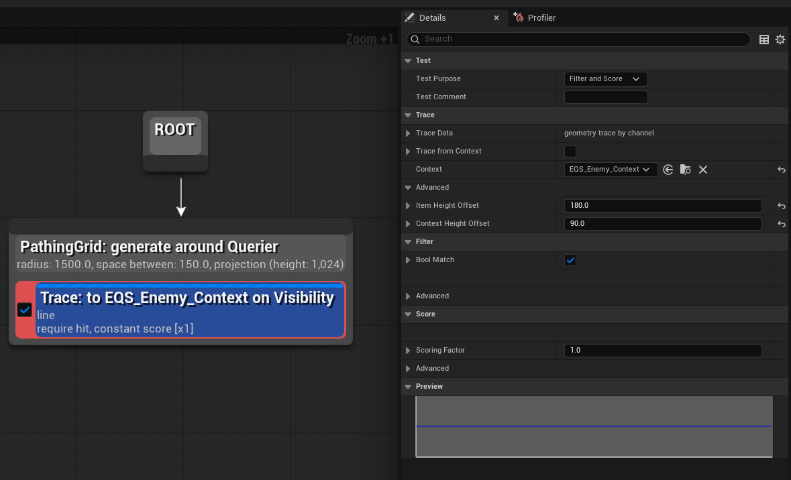
Tests 2 and 3: Distance (close to me, far from the enemy)
We now only keep points the player cannot see. Among those, the best spots are close to the agent and far from the enemy.
Add a Distance test (right-click Pathing Grid → Add Test → Distance):
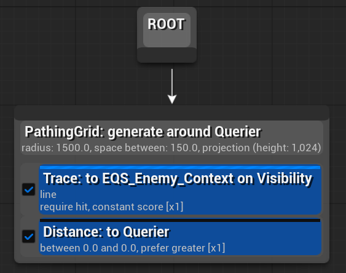
Set Test Purpose = Score Only and Scoring Equation = Inverse Linear. Leave Distance To as the Querier. Closer points get higher scores.
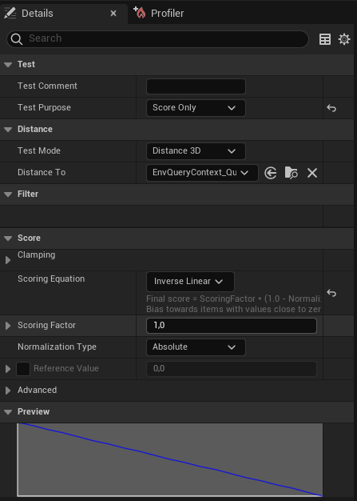
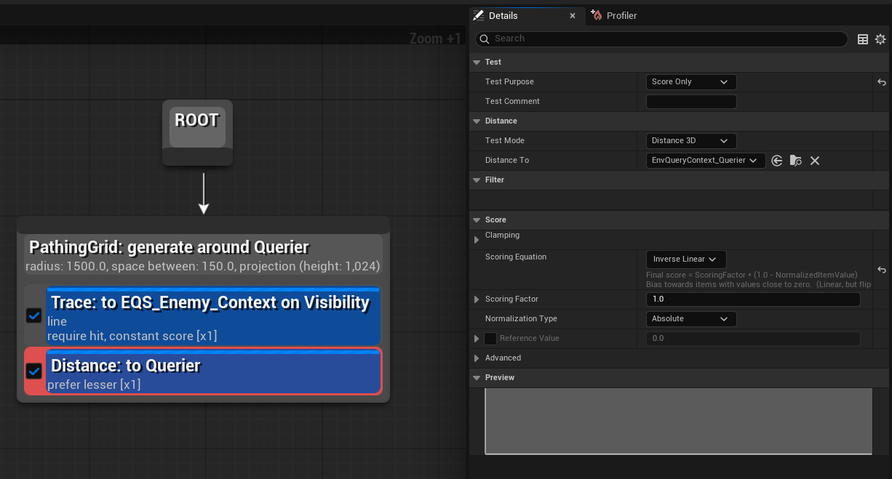
Points far from the testing pawn now look more yellow/orange (lower score):
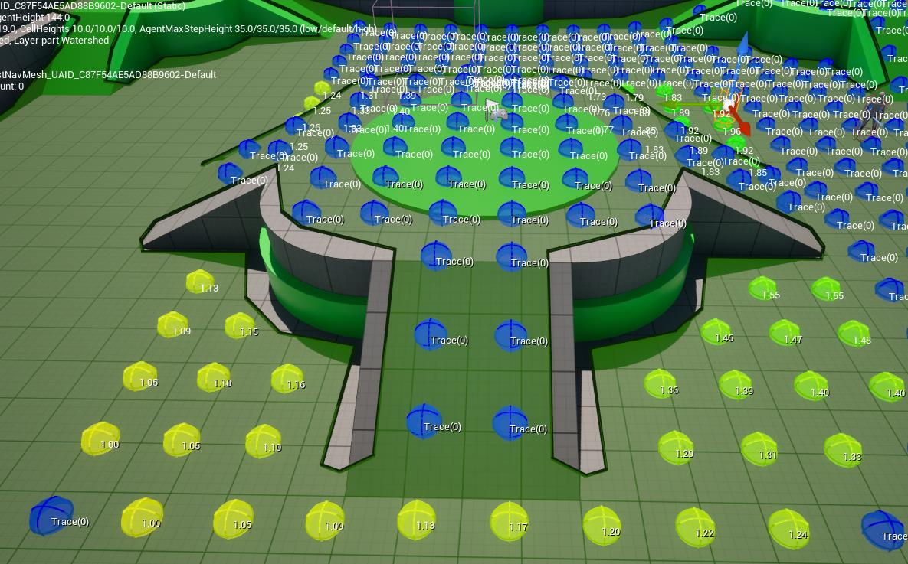
Add a second Distance test with Test Purpose = Score Only, Distance To = EQS_Enemy_Context, and keep the Linear equation, so points far from the enemy score higher:
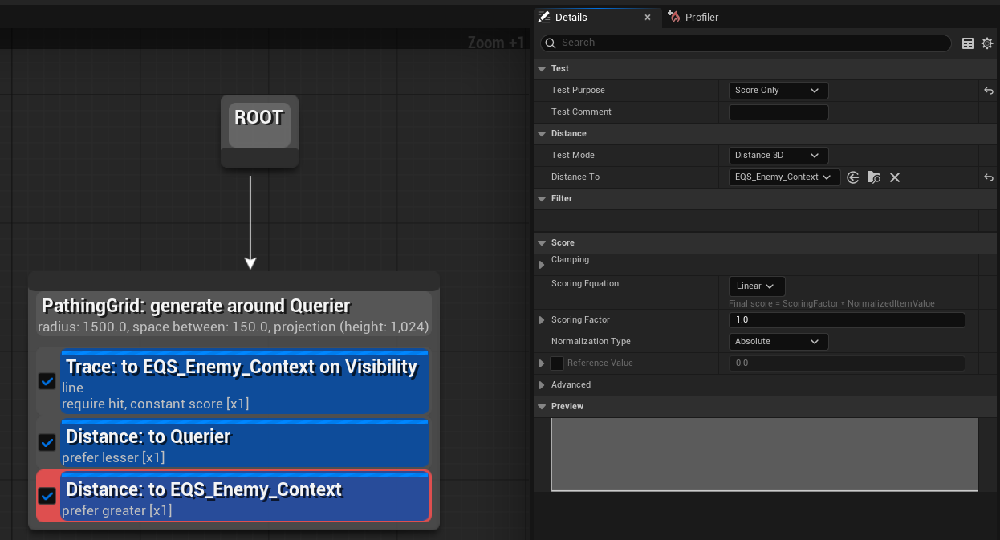
Each point’s score is now the sum of the two distance scores:
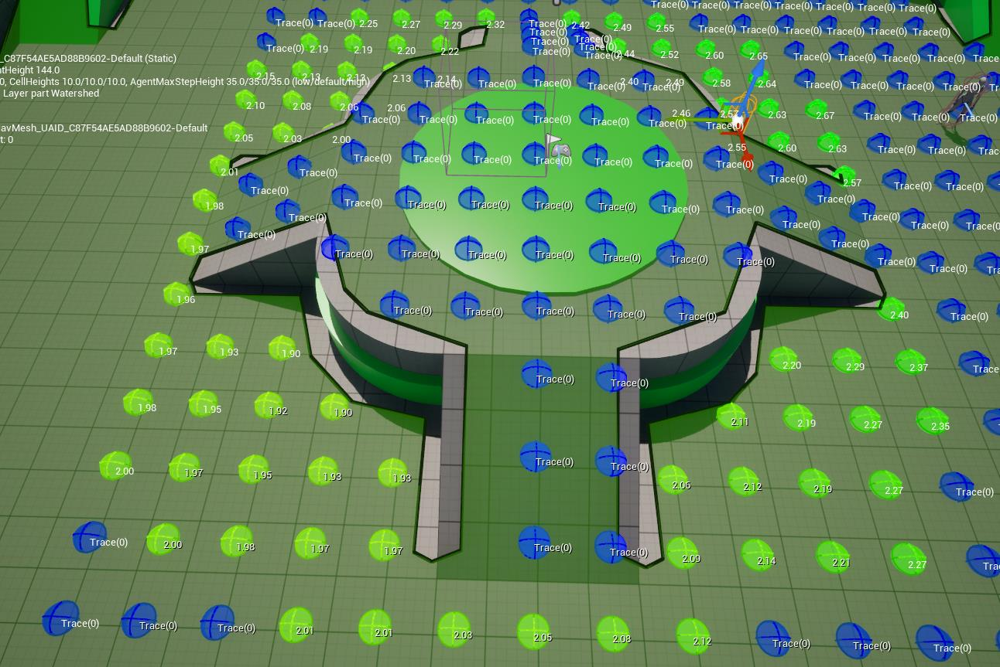
To see only the single best point, select the testing pawn and set Querying Mode = Single Best Item. Step to Debug Draw shows the result after a specific test.
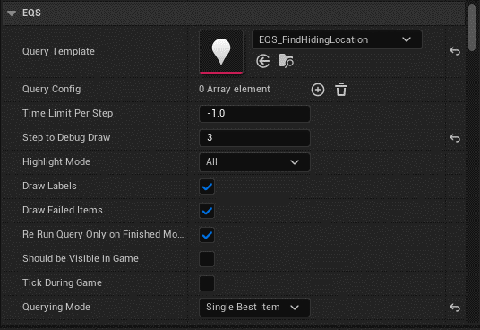
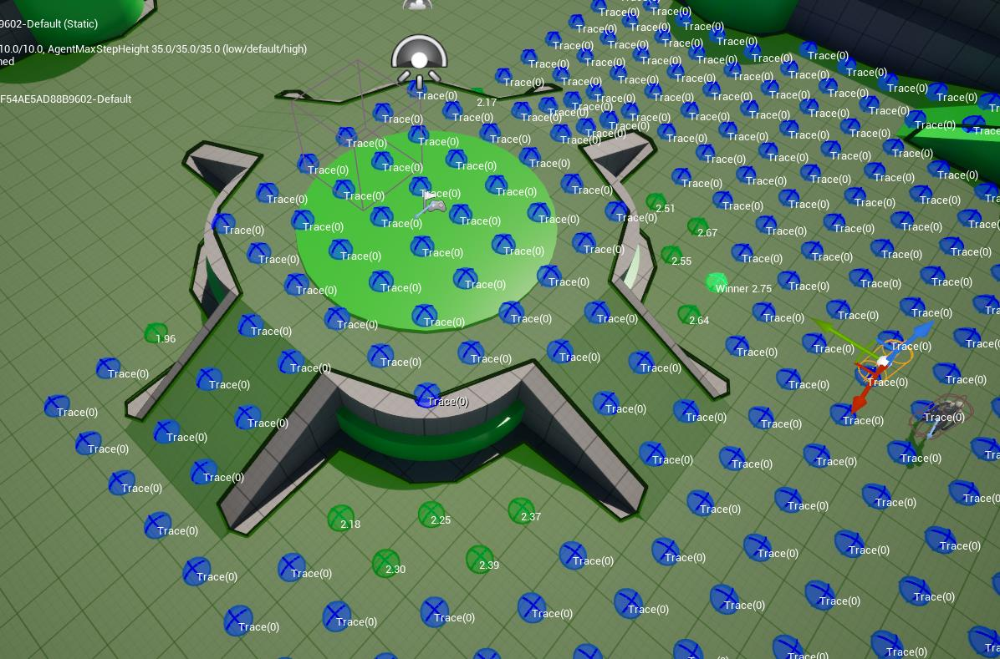
The query is done. Save it.
Hide behavior
The Hide states
In ST_Runner, add a child of Root named Hide, place it above Idle, and give it two children:
Root
├── Hide
│ ├── FindHidingSpot
│ └── MoveToHidingSpot
└── IdleRoot – Selection Behavior: Try Select Children In Order.
Hide – Selection Behavior: Try Select Children In Order.
| Enter Condition | Settings |
|---|---|
| Bool Compare | Left → bind to AIController › IsPlayerVisible; Right = true |
FindHidingSpot
| Task | Settings |
|---|---|
| Run Env Query | Query Template = EQS_FindHidingLocation; Run Mode = Single Best Item; Querier → Actor (context, bound automatically); Result → bind to Parameters › HidingLocation |
| Debug Text | Text = Finding spot, Reference Actor → Actor |
| # | Trigger | Go to |
|---|---|---|
| 1 | On State Succeeded | MoveToHidingSpot |
| 2 | On State Failed | Idle |
Run Env Query is asynchronous: it stays Running while EQS works, then succeeds after writing the best location into HidingLocation, or fails if no item passed the tests.
MoveToHidingSpot
| Task | Settings |
|---|---|
| Move To | Destination → bind to Parameters › HidingLocation; Acceptable Radius = 50 |
| Debug Text | Text = Hiding, Reference Actor → Actor |
| # | Trigger | Go to |
|---|---|---|
| 1 | On State Completed | Root |
When the agent arrives, the tree goes back to Root. If the player can still see it, Hide is selected again and a new spot is found; otherwise the agent goes to Idle.
If Run Env Query doesn’t show a Result you can bind to a parameter
In some engine versions the Run Env Query result can’t be bound to a parameter. Use a small custom task instead that stores the location in the controller:
- Add a Vector variable
HidingLocation(Instance Editable) toAIC_Runner. - Create
STT_FindHidingLocation(StateTreeTaskBlueprintBase) with variablesActor(Actor, Context),AIController(AIC_Runner, Context) andQueryTemplate(Env Query, Parameter). - In Event Enter State:
Event Enter State
└─► Run EQS Query (Query Template = QueryTemplate, Querier = Actor, Run Mode = Single Best Item)
└─► Bind Event to On Query Finished Event ──► Custom Event OnQueryFinished (Query Instance, Query Status)
OnQueryFinished
└─► Get Query Results as Locations (Query Instance)
└─► Branch (Length > 0)
True ──► SET AIController.HidingLocation = Results[0] ──► Finish Task (Succeeded = true)
False ──► Finish Task (Succeeded = false)- Use it in FindHidingSpot instead of Run Env Query, and bind the Move To Destination to AIController › HidingLocation.
Reacting to the player from Idle
While the agent is in Idle, nothing re-selects the root for up to 2 seconds. To react immediately, add an event transition to Idle, above the existing one:
| # | Trigger | Event Tag | Go to |
|---|---|---|---|
| 1 | On Event | AI.Runner.PlayerSeen |
Hide |
| 2 | On State Completed | – | Root |
When the controller sends PlayerSeen, the transition tries to enter Hide. Its enter condition reads IsPlayerVisible, which the controller already set to true, so the agent starts hiding right away.
Compile and Save.
Checkpoint 2
Play and walk in front of the agent. It should notice you, show Finding spot for a moment, then run to a place you can’t see and show Hiding. If you follow it and it sees you again when it arrives, it looks for a new spot.
Debugging
- State Tree Debugger. In the State Tree editor, Window → Debugger. Scrub the timeline to see active states, received events, fired transitions and parameter values (e.g.
HidingLocation). - Gameplay Debugger. Press ’ and NumPad 3 to see the EQS grid and each point’s result during play. Active State Tree states are shown in the AI category (NumPad 1), and perception in NumPad 4.
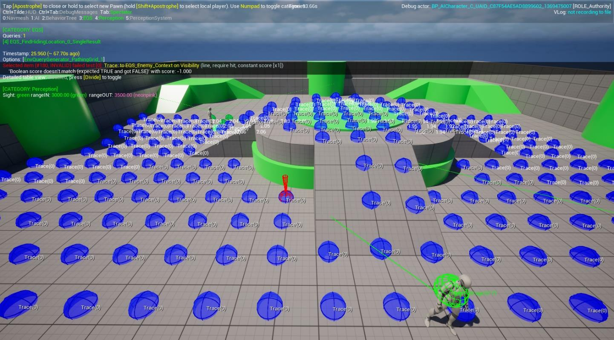
Press NumPad / (Divide) to toggle the detailed table with the top results of the query and the score of each test:
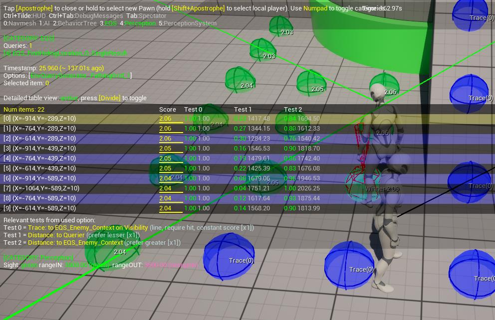
Common problems
| Symptom | Likely cause |
|---|---|
| The agent never perceives the player | Only Detect Enemies checked (see AI Perception), or Sight Radius too small |
| Events never reach the tree | Gameplay Tag missing in Project Settings, or Send State Tree Event target isn’t the StateTreeAI component |
| Event arrives but Hide isn’t entered | Variables set after sending the event, or IsPlayerVisible not Instance Editable / wrong binding |
IsPlayerVisible doesn’t appear in the binding menu |
Schema’s AI Controller Class isn’t AIC_Runner, or variable not Instance Editable |
| FindHidingSpot always fails | EQS_Enemy_Context returns nothing (player not stored yet), or no nav mesh around the agent |
| The agent hides in places the player can see | Trace test still traces to the Querier, or the height offsets are missing |
| Every sphere is red in the editor | No enemy outside the game: add the EQSTestingPawn → Player Start branch to the context |
Final result
| State | Selection / Enter conditions | Tasks | Transitions |
|---|---|---|---|
| Root | Try Select Children In Order · Parameter: HidingLocation |
– | – |
| Hide | AIController.IsPlayerVisible == true |
– | – |
| ↳ FindHidingSpot | – | Run Env Query → HidingLocation |
On Succeeded → MoveToHidingSpot · On Failed → Idle |
| ↳ MoveToHidingSpot | – | Move To (HidingLocation) |
On Completed → Root |
| Idle | – | Delay 2 s | On Event AI.Runner.PlayerSeen → Hide · On Completed → Root |
stateDiagram-v2
direction LR
[*] --> Idle
Idle --> FindHidingSpot : PlayerSeen event
FindHidingSpot --> MoveToHidingSpot : spot found
FindHidingSpot --> Idle : no spot
MoveToHidingSpot --> FindHidingSpot : arrived, still visible
MoveToHidingSpot --> Idle : arrived, not visible
Exercises
- Create a folder
AISearchinside theAIfolder, and in it a new AI character namedAI_Search, with its own controller and State Tree (ST_Search).AI_Searchshould patrol around the map (you can reuse the patrol states from Assignment 02).- When
AI_Searchsees the player, it should move to him. - When it loses sight of the player, it should move to the last known position where it saw him. Use the AIStimulus from the AIPerception component (Stimulus Location when Successfully Sensed becomes
false). - On arriving at the last known position, it should enter a Searching mode, looking for the player around that position for 20 seconds. Use the stimulus from the AIPerception component, an EQS query to pick search points around the last known location, and the Max Age property of the sight sense.
- Store
LastKnownLocationin the controller and send an event such asAI.Search.PlayerLostwhen sight is lost. - A Search parent state with a Delay of 20 s and children that loop find point → move → look around ends the search automatically when the delay finishes (remember: a task on a parent state that finishes completes that state; see Transition selection in Assignment 02).
- On Target Perception Forgotten (fired after Max Age) is a natural signal to give up the search.